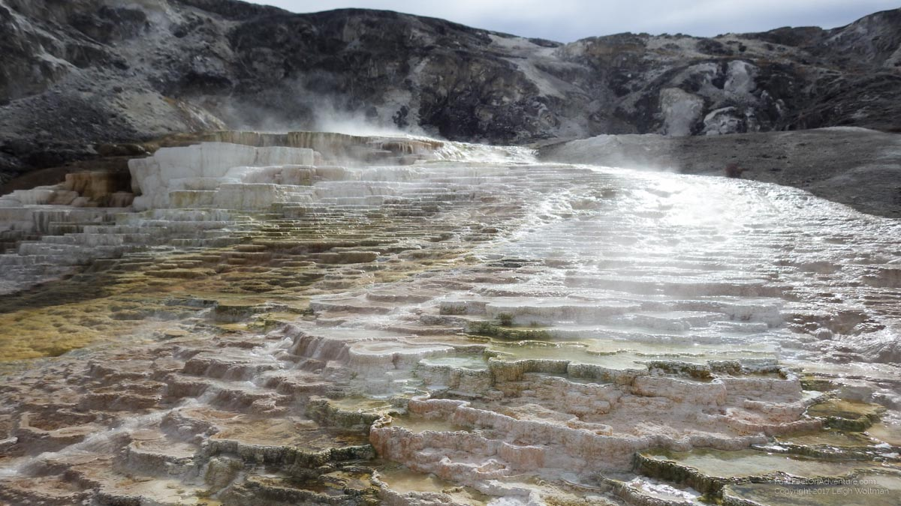
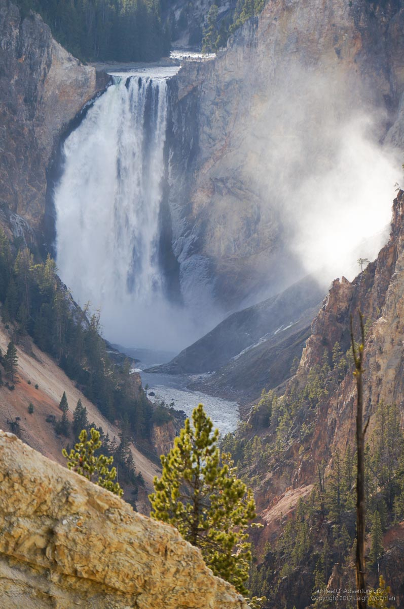
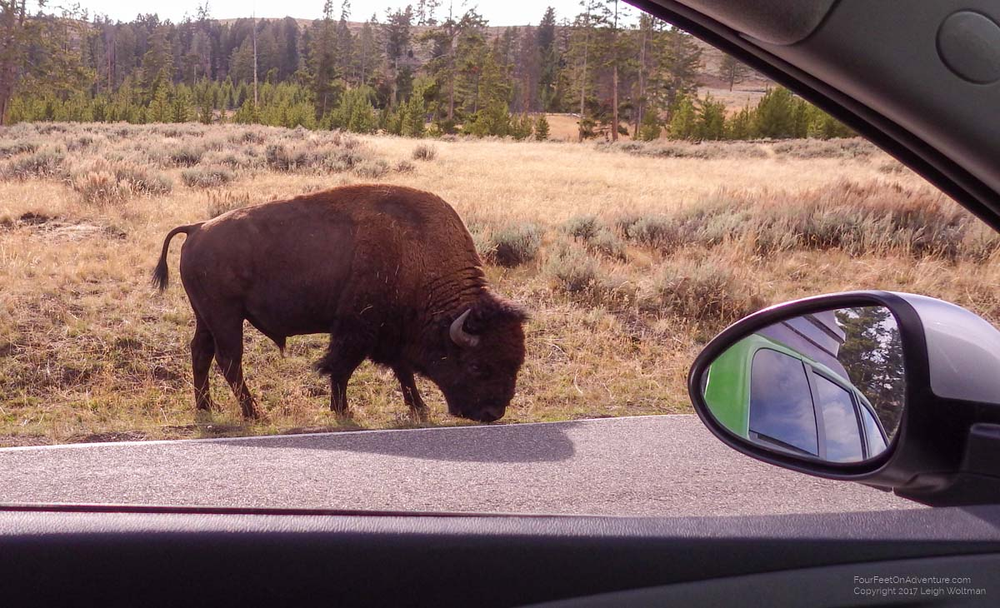
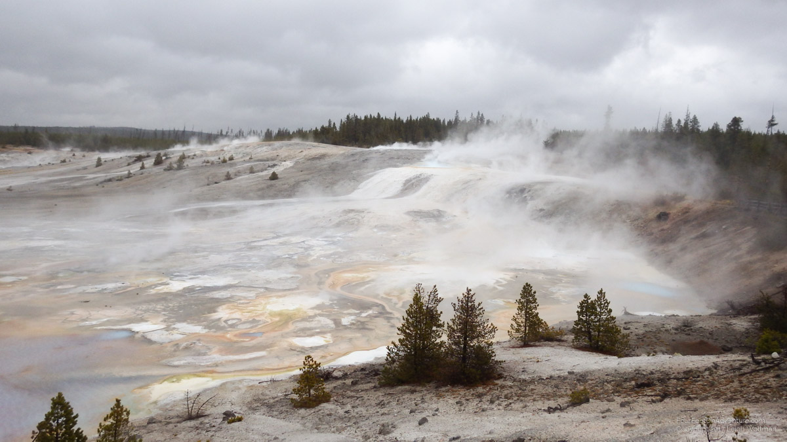
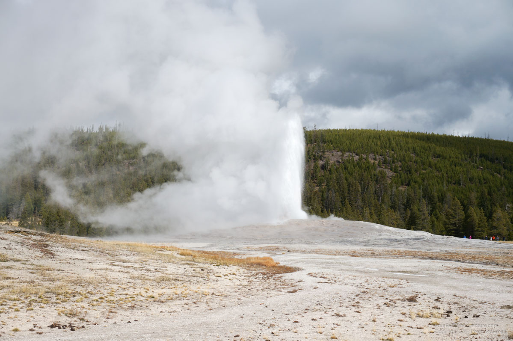
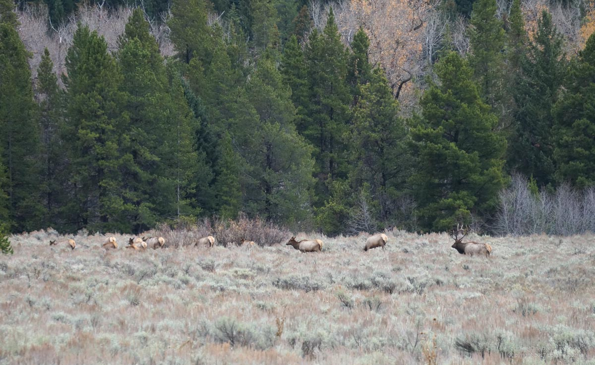
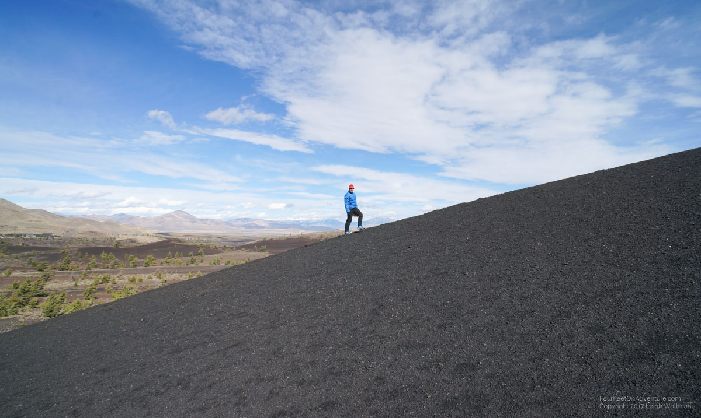
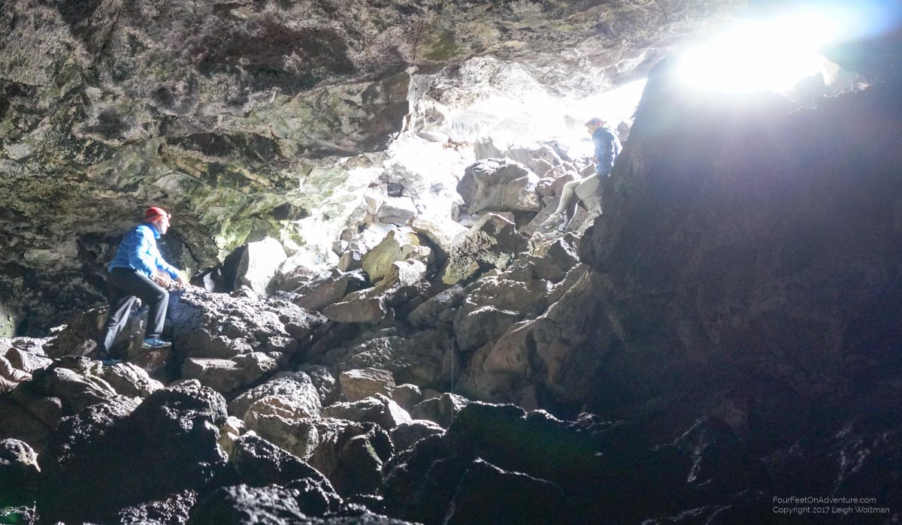
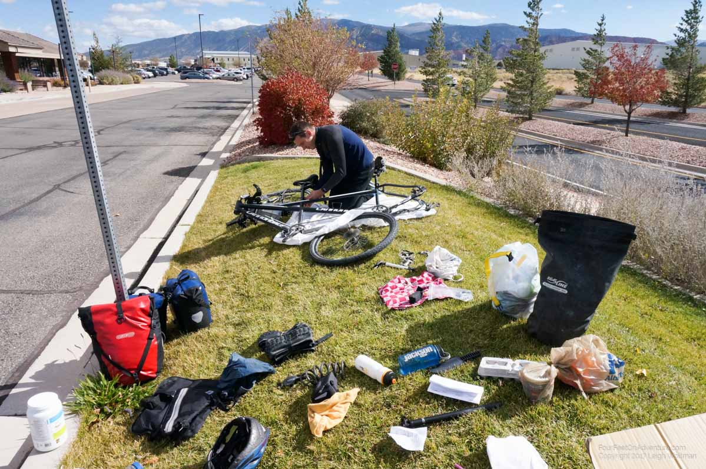

It is Monday evening, and we are at the KOA campground in Cedar City. The last couple days have been very busy, we probably should have booked the rental car for a longer time, there was so much to see on our way down.
After picking up a one day rental car I met Annette at the AirBnb we booked. The next day we drove to Yellowstone for the day and drove part of the park road visiting the various little sites to hydrothermal features along the way and Yellowstone canyon.


After that it was back to Belgrade to the same AirBnb host. I dropped off the rental car and Annette rode to the airport to pick me up on the bike.

The next morning we rode the tandem to the airport again and picked up another rental car for 3 days. At the airport we found a spot to disassemble the tandem. Without seats, pedals, wheels, racks and with removing the front fork/handlebars it laid easily in the back of the car with the seats folded down. With that rental we picked up the rest of our gear and headed back to Yellowstone via a different entrance. We checked out some more features, geysers, mud pots, steam holes and such, and then took a campground in the park. It was raining that day so we had a wet evening but the gear is all good for that.



Following day, we drove through the rest of Yellowstone (seeing old faithful for Annette's first time) and then went on through the Tetons and up to a small campground in Idaho with a hot spring pool to finally bath in that hot water we have seen coming out of the earth for the last couple of days. The hot tub was about 28C and the main pool about 22C - a good way to end the day.
The next day we tried to make it early to Craters of the Moon park but only succeeded in getting there by noon. We visited the various lava flows and hiked through the caves`. After that we made a long drive south and camped at 10PM at a campground out of desperation in finding a place.


Now today, we made it just in time for our rental car return and then spent 3 hours on the airport lawn in Cedar City assembling the bike and packing up the gear.

We are both of the opinion that we have too much stuff, but our opinion tends to be it is the other person who is mainly to blame :) So a box will likely have to be mailed to Canada soon!
Tomorrow we will actually start some biking but need to get on Google maps to see where to head.